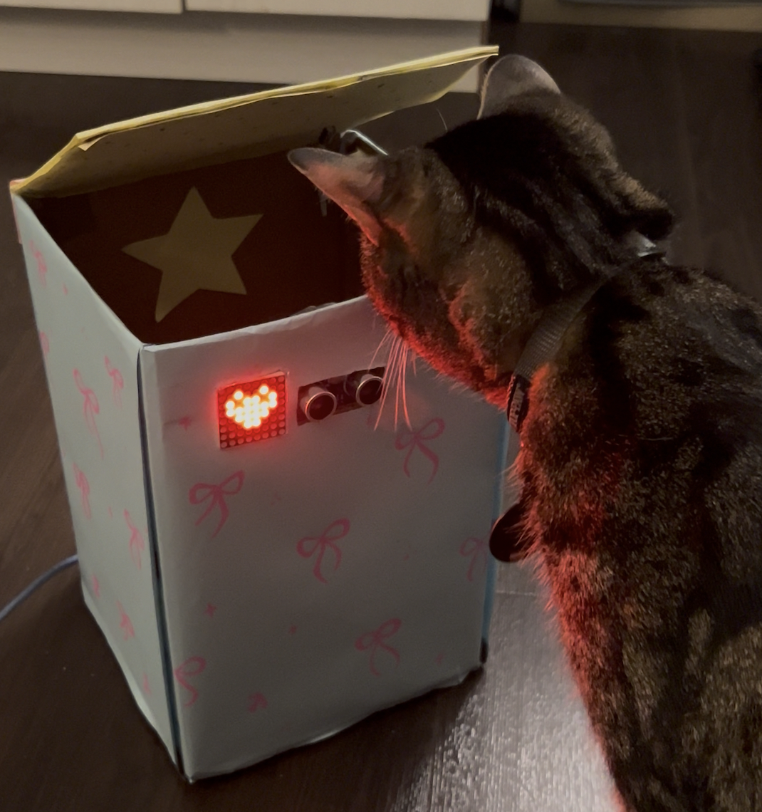
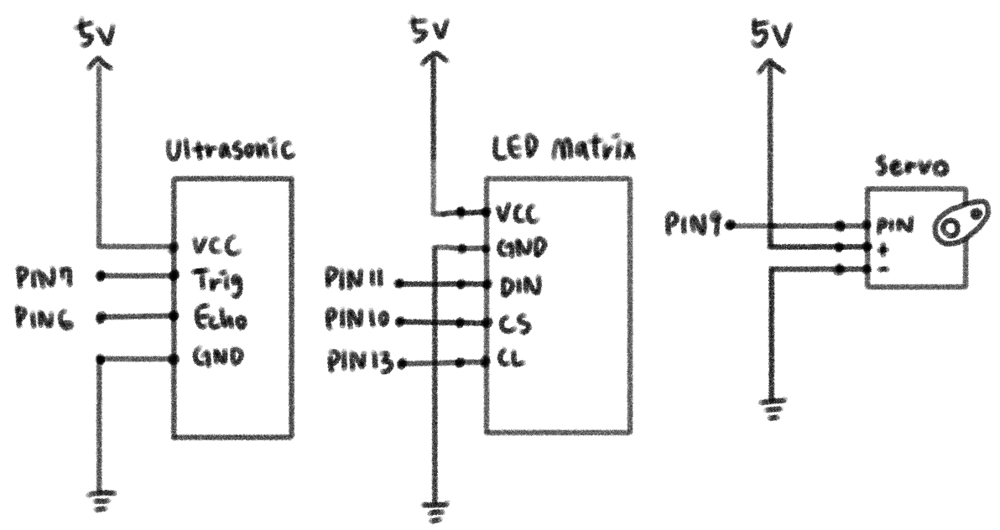
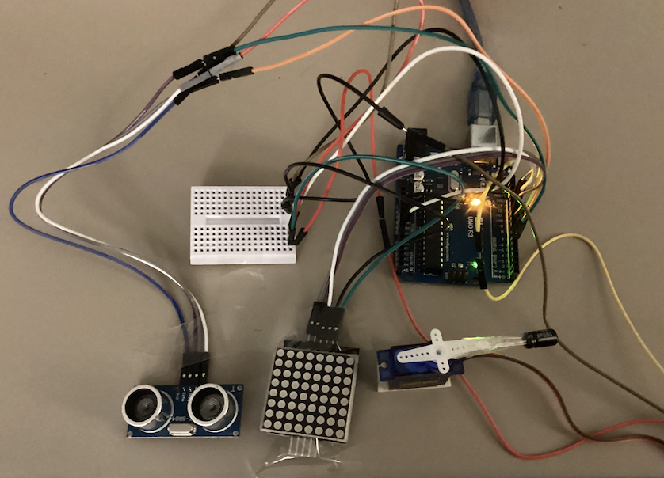
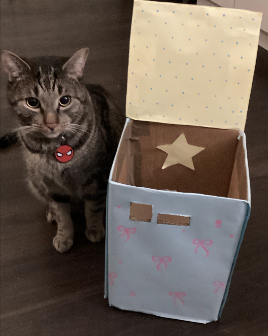
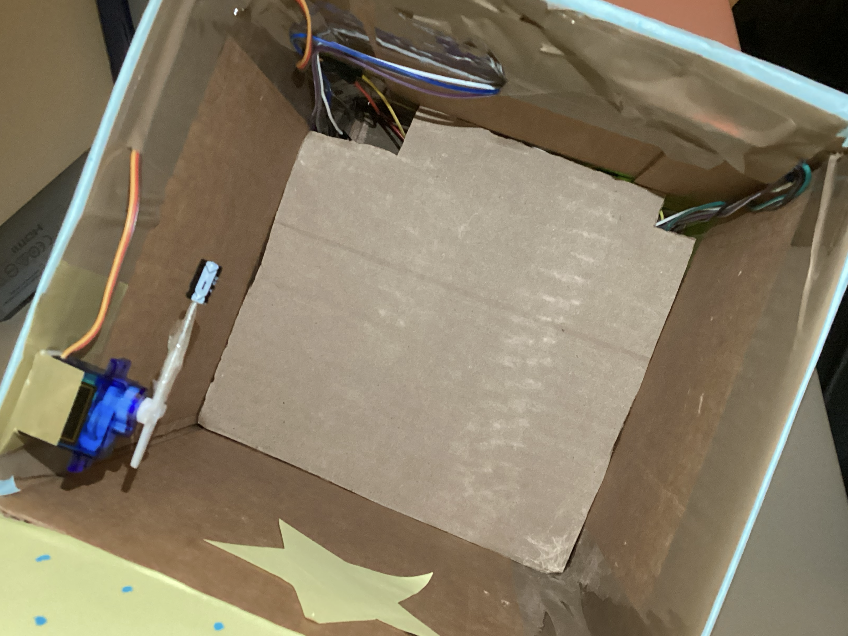
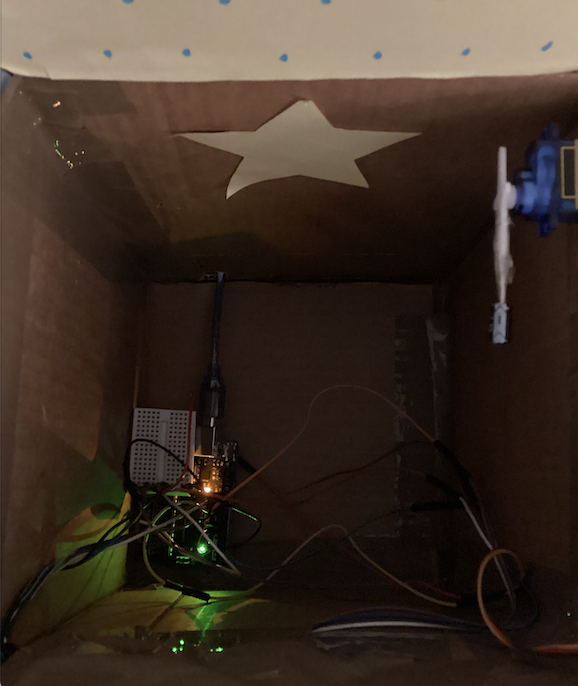

For my final project I built PeekBox, an interactive storage container for my cat’s toys. The goal was to turn a simple storage box into something playful and responsive. When a hand or my cat approaches the front of the box, the lid opens automatically and an LED matrix displays animated icons. After a short delay the lid closes again.
The project combines motion sensing, motor control, and a small display. It acts as both a functional storage container and a playful object that reacts to movement. Each time the box opens, a different icon appears on the display, cycling through a loop of five icons.

The ultrasonic sensor detects nearby movement. It connects to the Arduino through a trig pin and echo pin. A servo motor controls the lid of the box by rotating between open and closed positions. A MAX7219 LED matrix module is connected using three digital pins and is used to display the icons.

Connections: The ultrasonic sensor uses four wires: VCC to 5V, GND to GND, TRIG to pin 7, and ECHO to pin 6. The servo motor is connected to pin 9 for its signal wire, with power and ground connected to 5V and GND. The MAX7219 LED matrix connects with DIN to pin 11, CLK to pin 13, and CS to pin 10.
The ultrasonic sensor measures the time it takes for a sound pulse to bounce
back from an object. The distance is calculated using:
distance = duration × 0.034 / 2
where 0.034 cm per microsecond is the speed of sound.
I set the trigger distance to about 20 cm so the box reacts when something
comes close to the front.
#include Servo.h
#include LedControl.h
// ---------------- SERVO ----------------
Servo lidServo;
// ---------------- MAX7219 ----------------
// LedControl(DIN, CLK, CS, number of devices)
LedControl lc = LedControl(11, 13, 10, 1);
// ---------------- ULTRASONIC SENSOR ----------------
const int trigPin = 7;
const int echoPin = 6;
// ---------------- SERVO SETTINGS ----------------
const int servoPin = 9;
const int closedAngle = 0;
const int openAngle = 90;
// ---------------- DETECTION SETTINGS ----------------
const int openDistance = 20;
// tracks whether something is already in range
bool objectDetected = false;
// tracks which icon should show next
int iconIndex = 0;
void setup() {
// set ultrasonic pins
pinMode(trigPin, OUTPUT);
pinMode(echoPin, INPUT);
// attach servo
lidServo.attach(servoPin);
// start closed
lidServo.write(closedAngle);
// start matrix
lc.shutdown(0, false);
lc.setIntensity(0, 8);
lc.clearDisplay(0);
// serial monitor
Serial.begin(9600);
}
void loop() {
// measure distance
int distance = getDistance();
// print for debugging
Serial.print("Distance: ");
Serial.print(distance);
Serial.print(" Icon index: ");
Serial.println(iconIndex);
// if object newly enters range
if (distance > 0 && distance <= openDistance && objectDetected == false) {
// mark object as detected
objectDetected = true;
// show the current icon
showIcon(iconIndex);
// open lid
lidServo.write(openAngle);
delay(1000);
// close lid
lidServo.write(closedAngle);
delay(1000);
// clear display after action
lc.clearDisplay(0);
// move to next icon
iconIndex++;
// loop back after 5 icons
if (iconIndex >= 5) {
iconIndex = 0;
}
}
// once object leaves range, allow next trigger
if (distance > openDistance) {
objectDetected = false;
lc.clearDisplay(0);
}
delay(100);
}
// ---------------- DISTANCE FUNCTION ----------------
int getDistance() {
// clear trigger
digitalWrite(trigPin, LOW);
delayMicroseconds(2);
// send pulse
digitalWrite(trigPin, HIGH);
delayMicroseconds(10);
digitalWrite(trigPin, LOW);
// measure echo duration
long duration = pulseIn(echoPin, HIGH, 30000);
// if no echo, return a large value
if (duration == 0) {
return 999;
}
// convert to cm
int distance = duration * 0.034 / 2;
return distance;
}
// ---------------- ICON DRAWING ----------------
void showIcon(int index) {
// clear display first
lc.clearDisplay(0);
// icon 0 = smiley
if (index == 0) {
drawSmiley();
}
// icon 1 = heart
else if (index == 1) {
drawHeart();
}
// icon 2 = diamond
else if (index == 2) {
drawDiamond();
}
// icon 3 = flower
else if (index == 3) {
drawFlower();
}
// icon 4 = star
else if (index == 4) {
drawStar();
}
}
// ---------------- ICON FUNCTIONS ----------------
void drawSmiley() {
// eyes
lc.setLed(0, 2, 2, true);
lc.setLed(0, 2, 5, true);
// mouth
lc.setLed(0, 5, 2, true);
lc.setLed(0, 6, 3, true);
lc.setLed(0, 6, 4, true);
lc.setLed(0, 5, 5, true);
}
void drawHeart() {
lc.setLed(0, 1, 2, true);
lc.setLed(0, 1, 5, true);
lc.setLed(0, 2, 1, true);
lc.setLed(0, 2, 3, true);
lc.setLed(0, 2, 4, true);
lc.setLed(0, 2, 6, true);
lc.setLed(0, 3, 1, true);
lc.setLed(0, 3, 2, true);
lc.setLed(0, 3, 3, true);
lc.setLed(0, 3, 4, true);
lc.setLed(0, 3, 5, true);
lc.setLed(0, 3, 6, true);
lc.setLed(0, 4, 2, true);
lc.setLed(0, 4, 3, true);
lc.setLed(0, 4, 4, true);
lc.setLed(0, 4, 5, true);
lc.setLed(0, 5, 3, true);
lc.setLed(0, 5, 4, true);
}
void drawDiamond() {
lc.setLed(0, 1, 3, true);
lc.setLed(0, 1, 4, true);
lc.setLed(0, 2, 2, true);
lc.setLed(0, 2, 5, true);
lc.setLed(0, 3, 1, true);
lc.setLed(0, 3, 6, true);
lc.setLed(0, 4, 2, true);
lc.setLed(0, 4, 5, true);
lc.setLed(0, 5, 3, true);
lc.setLed(0, 5, 4, true);
}
void drawFlower() {
// petals
lc.setLed(0, 1, 3, true);
lc.setLed(0, 1, 4, true);
lc.setLed(0, 2, 2, true);
lc.setLed(0, 2, 5, true);
lc.setLed(0, 3, 1, true);
lc.setLed(0, 3, 6, true);
lc.setLed(0, 4, 2, true);
lc.setLed(0, 4, 5, true);
lc.setLed(0, 5, 3, true);
lc.setLed(0, 5, 4, true);
// center
lc.setLed(0, 3, 3, true);
lc.setLed(0, 3, 4, true);
lc.setLed(0, 4, 3, true);
lc.setLed(0, 4, 4, true);
}
void drawStar() {
lc.setLed(0, 1, 3, true);
lc.setLed(0, 1, 4, true);
lc.setLed(0, 2, 2, true);
lc.setLed(0, 2, 5, true);
lc.setLed(0, 3, 1, true);
lc.setLed(0, 3, 3, true);
lc.setLed(0, 3, 4, true);
lc.setLed(0, 3, 6, true);
lc.setLed(0, 4, 2, true);
lc.setLed(0, 4, 5, true);
lc.setLed(0, 5, 3, true);
lc.setLed(0, 5, 4, true);
}
The code reads the distance from the ultrasonic sensor and checks whether an object has entered the trigger range. When something is detected, the servo opens the lid, shows an icon animation on the LED matrix, and then closes the lid again. Each interaction advances the icon index so the display cycles through a set of five different icons.



The box itself was built from cardboard and decorated with simple patterns and stars to give it a playful look. The servo is mounted inside the lid so it can rotate the top open and closed. The electronics are placed inside the container with the sensor and LED display exposed on the front panel.
I designed the opening in the bottom of the box so the toys can be removed easily while still keeping the electronics hidden inside. The final result is a functional storage container that reacts when something approaches it.

When a hand or my cat approaches the box, the ultrasonic sensor detects the movement and triggers the lid to open. While the lid moves, the LED matrix shows a small animated icon. The icons rotate in a loop so each interaction feels slightly different. After a short delay the lid closes and the display turns off until the next interaction.
The most challenging part of this project was working with the LED matrix icons. I originally wanted each icon to be animated, for example making the smiley face blink or creating small motion effects for the other icons. However, once I started implementing this, the code quickly became much more complicated. Each animation required multiple frames, which meant writing many additional lines of code and coordinating the timing between frames.
Because several icons were cycling in a loop, keeping the animations synchronized without breaking the logic became difficult. In the end, I simplified the interaction so that one icon appears at a time during each activation of the box.
Another challenge was fitting all of the electronics inside the box while still leaving space to store the toys. The servo, Arduino, sensor, and wiring take up more room than expected. To solve this, I added a divider inside the box to separate the electronics from the storage area.
This allowed the wiring to stay organized and hidden while keeping enough space inside the container to store my cat’s toys.
I used AI tools mainly for debugging small parts of the Arduino code and testing different icon patterns for the LED matrix. The final interaction, physical construction, and testing were completed through trial and iteration on the hardware prototype.